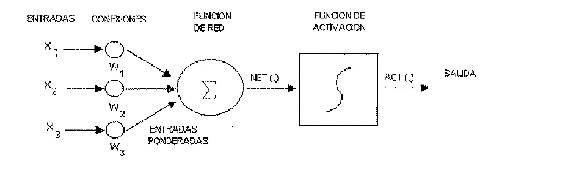
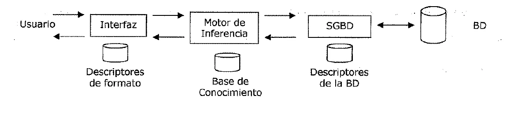

Protocolo de emergencia
Lo justo de Inteligencia Artificial para cada instancia, con el examen encima.
Hay muy pocos exámenes nuevos
El Drive tiene solo tres exámenes de 2023 en adelante, los tres de 2025. No hay ninguno de 2023 ni de 2024, y ningún 1° parcial nuevo. Ningún examen tiene resolución oficial. Confirmá la forma con tu comisión.
| Instancia | Qué piden |
|---|---|
| 1° parcial | No hay de 2023 en adelante. En 2019 y 2021 fue teoría de las Unidades 1 y 2, en opción múltiple o verdadero o falso, y Prolog sobre una base de hechos |
| Aprobación directa | En 2025, 15 recuadros de opción múltiple por campus. Lógica 6 (dos de prueba formal), aprendizaje automático 5, redes neuronales 2, sistemas expertos 1 y sistemas basados en conocimiento 1 |
| Final, práctica | Dos programas de Prolog sobre una base de hechos con una lista adentro, uno que filtra una lista y otro que arma una |
| Final, teoría | Diez temas según el relato de un alumno. Demostración indirecta, tipos de aprendizaje, argumento, tabla de verdad, resolución, perceptrón, sistema experto y redes neuronales |
1° parcial
Solo en el plan viejo
Los parciales de las Unidades 1 y 2 del Drive son de 2019 y 2021. En 2021 fueron 15 preguntas de teoría de 0,7 por campus, donde las incorrectas restaban, y 10 de Prolog. En 2019, diez afirmaciones de verdadero o falso justificando las falsas, y dos programas de Prolog. La forma puede haber cambiado, pero los resúmenes de 2026 siguen trayendo estos temas.
Tipos de problema
| Tipo | Qué pasa con los pasos | Ejemplo | Estructura de control |
|---|---|---|---|
| Ignorable | Se pueden ignorar | Demostrar un teorema | Sencilla, nunca vuelve atrás |
| Recuperable | Se pueden deshacer | 8-puzzle | Vuelta atrás, con una pila «push-down» |
| No recuperable | No se pueden deshacer | Ajedrez | Muchísimo esfuerzo en cada decisión, porque es irrevocable |
Fuente: apunte de la cátedra, unidad 1, páginas 25 y 26. Salió en los dos parciales. Con consecuencia cierta, como el 8-puzzle, la planificación garantiza llegar. Con consecuencia incierta, como el bridge, da como mucho una secuencia con «una buena probabilidad de conducir a una solución». Los más difíciles son los irrecuperables de consecuencia incierta. Fuente: apunte de la cátedra, unidad 1, página 26.
Un sistema de producción tiene reglas, bases de conocimiento, una estrategia de control y un aplicador de reglas. La estrategia de control tiene dos requisitos, «que cause algún cambio» y «que sea sistemática». Fuente: apunte de la cátedra, unidad 1, página 22, y unidad 2, página 4.
Búsqueda a ciegas y heurística
| Anchura | Profundidad | |
|---|---|---|
| Memoria | Guarda todo el árbol generado | Solo los nodos del camino actual |
| Callejones sin salida | No queda atrapada | Puede perder tiempo en ellos |
| Varias soluciones | Encuentra la mínima | Puede dar una larga |
| Suerte | Tiene que revisar cada nivel | Puede encontrarla sin mirar casi nada |
Fuente: apunte de la cátedra, unidad 2, páginas 6 a 9.
- Ramificación y acotación. Guarda la ruta más corta hasta el momento y corta una ruta en cuanto pasa a la marcada. Garantiza la más corta, con tiempo exponencial. Fuente: unidad 2, páginas 5 y 6.
- Heurística. Mejora la eficiencia y suele sacrificar completitud. Fuente: unidad 2, página 10.
- Generación y prueba. Genera, verifica y vuelve a generar. Es primero en profundidad. Fuente: unidad 2, página 12.
- Escalada. Generación y prueba con una función heurística. La simple prueba operadores de a uno y la de máxima pendiente elige el mejor de todos. Se traba en máximos locales, mesetas y crestas, y no da garantías. Fuente: unidad 2, páginas 13 a 15.
- Reducción de problemas. Árbol Y-O. Una meta Y pide todas sus submetas y una meta O, cualquiera. Fuente: unidad 2, página 24.
- Verificación de restricciones. Propaga las restricciones y, si no alcanza, supone algo y propaga de nuevo. Fuente: unidad 2, página 28.
- Medios y fines. Detecta diferencias entre el estado actual y el objetivo y busca un operador que las reduzca. Lo usó GPS. Fuente: unidad 2, página 31.
El primero mejor. En cada paso se selecciona «el nodo más prometedor que se haya generado hasta ese momento», y la rama vieja no se olvida. Fuente: apunte de la cátedra, unidad 2, páginas 17 y 18.

En la figura, el número es una estimación del costo, y por eso gana el más bajo. Después de expandir D aparecen E(4) y F(6). Entonces B(3) pasa a ser el mejor, y la búsqueda salta a esa rama. Fuente: apunte de la cátedra, unidad 2, página 18.
Juegos
Minimax. Se generan los movimientos hasta cierta profundidad, se evalúan las hojas y los valores suben. En tu capa elegís el máximo y en la del oponente se elige el mínimo. Fuente: apunte de la cátedra, unidad 2, páginas 35 a 37.

Sirve para chequear un resultado. En el examen va el desarrollo que pide la cátedra.
En el ejemplo, el movimiento correcto es C, «puesto que no hay nada que el oponente pueda hacer ahí para producir un valor peor que −2». Fuente: apunte de la cátedra, unidad 2, página 37.
Poda alfa-beta. Requiere «dos valores umbral, uno que representa la cota inferior del valor que puede asignarse en último término a un nodo maximizante (alfa) y otro que represente la cota superior del valor que puede asignarse a un nodo minimizante (beta)». Fuente: apunte de la cátedra, unidad 2, páginas 37 y 38.

En la figura, B asegura un 3. Al ver F = −5, C ya vale −5 o menos. Es peor que B, así que G no hace falta mirarlo. Fuente: apunte de la cátedra, unidad 2, página 38.
Algoritmos genéticos y planificación
Los algoritmos genéticos trabajan con una codificación de los parámetros, buscan en una población, usan la función objetivo y reglas de transición probabilísticas. No garantizan la óptima. Fuente: apunte de la cátedra, unidad 2, páginas 43 a 46.
Planificar es calcular varios pasos antes de ejecutar ninguno. STRIPS describe cada operador con PRECONDICIÓN, AÑADIR y BORRAR. La pila de objetivos resuelve un objetivo por vez, la no lineal trabaja «simultáneamente con múltiples subproblemas», la jerárquica resuelve primero lo más crítico y los sistemas reactivos eligen una acción cada vez. Fuente: apunte de la cátedra, unidad 2, páginas 52 a 65.
La anomalía de Sussman muestra por qué hace falta un plan no lineal. Los objetivos interactúan, y lograr uno deshace el otro. Fuente: apunte de la cátedra, unidad 2, páginas 63 y 64.

Prolog básico
- Un hecho afirma algo. Una regla es
cabeza :- cuerpo.Las variables empiezan con mayúscula y_es la anónima. ,es la conjunción y;la disyunción.not/1es la negación.=es una comprobación lógica.X=3+2no da 5. Para calcular se usais.- Toda recursión necesita un caso que la corte, como
factorial(0,1).En una lista,[H|T]parte en cabeza y cola, y el corte es[].
Fuente: diapositivas de Prolog de la cátedra, 1 Introducción y 3 Recursividad; Programación práctica en Prolog, páginas 6 a 14.
Aprobación directa
Argumento, verdad y validez
Definición de argumento
«Un argumento puede definirse como un grupo cualquiera de proposiciones o enunciados de los cuales se afirma que hay uno que se sigue de los demás, considerando éstos como fundamento de la verdad de aquél.»
«La conclusión de un argumento es la proposición afirmada basándose en las otras proposiciones del argumento y estas otras proposiciones que se afirman como fundamento o razones para la aceptación de la conclusión son las premisas de ese argumento.»
Apunte de la cátedra, unidad 3, página 16
Argumento válido
«Un argumento deductivo es válido cuando sus premisas y conclusiones están relacionadas de modo tal que es absolutamente imposible que las premisas sean verdaderas, a menos que la conclusión lo sea también.»
Apunte de la cátedra, unidad 3, página 17
- «La verdad y falsedad caracterizan las proposiciones o los enunciados», y «la validez y la invalidez caracterizan los argumentos». Fuente: apunte de la cátedra, unidad 3, página 17.
- «La validez de un argumento no garantiza la verdad de su conclusión.» Fuente: apunte de la cátedra, unidad 3, página 17.
- «La falsedad de su conclusión no garantiza la invalidez de un argumento. Pero la falsedad de su conclusión sí garantiza que o el argumento es inválido o por lo menos una de sus premisas es falsa.» Fuente: apunte de la cátedra, unidad 3, página 18.
- Para establecer la verdad de su conclusión, un argumento «debe ser válido y todas sus premisas deben ser verdaderas». Fuente: apunte de la cátedra, unidad 3, página 18.
Enunciados y conectivos
Enunciado simple y compuesto
«Un enunciado simple es uno que no contiene otro enunciado como parte componente.»
«Todo enunciado compuesto contiene otro enunciado como componente.»
Apunte de la cátedra, unidad 3, página 20
Función de verdad
«Cualquier enunciado compuesto cuyo valor de verdad está determinado completamente por los valores de verdad de sus enunciados componentes es un enunciado compuesto función de verdad.»
Apunte de la cátedra, unidad 3, página 20
| Conectivo | Símbolo | Cuándo es verdadero |
|---|---|---|
| Conjunción | Solo si los dos son verdaderos | |
| Negación | Si es falso | |
| Disyunción débil o inclusiva | Si al menos uno es verdadero | |
| Disyunción fuerte o exclusiva | Si al menos uno es verdadero, pero no ambos |
Fuente: apunte de la cátedra, unidad 3, páginas 20 a 23.
En «si entonces », es el antecedente y el consecuente. «Cualquier condicional de antecedente verdadero y consecuente falso debe ser falso.» La herradura abrevia y se llama implicación material. «Si , », « si » y « solo si » dicen lo mismo. Fuente: apunte de la cátedra, unidad 3, páginas 24 a 26.
| T | T | T |
| T | F | F |
| F | T | T |
| F | F | T |
Formas y tablas de verdad
Una forma argumental es inválida si «tiene cuando menos una instancia de sustitución con premisas verdaderas y una conclusión falsa». Fuente: apunte de la cátedra, unidad 3, página 27.
Las tablas «proporcionan un método puramente mecánico o efectivo de decisión de la validez o invalidez de cualquier argumento». Con variables hacen falta renglones. «Una forma argumental es válida si y solo si su tabla de verdad tiene el valor T bajo su conclusión en cada renglón en que haya el valor T bajo todas sus premisas.» Fuente: apunte de la cátedra, unidad 3, páginas 28 a 33.
| Falacia | Forma |
|---|---|
| Afirmación del Consecuente | |
| Negación del Antecedente |
Las dos tienen un renglón con premisas verdaderas y conclusión falsa. Fuente: apunte de la cátedra, unidad 3, página 30.
Forma sentencial
Una forma sentencial es «cualquier sucesión de símbolos conteniendo variables sentenciales, de modo que al sustituir enunciados por las variables sentenciales –reemplazando la misma variable sentencial por el mismo enunciado en toda la secuencia– el resultado es un enunciado».
Apunte de la cátedra, unidad 3, página 30
| Clase | Definición del apunte | Ejemplo |
|---|---|---|
| Tautología | «solo tiene instancias de sustitución verdaderas» | |
| Contradicción | «solo tiene instancias de sustitución falsas» | |
| Contingente | No es «tautológica ni contradictoria» |
Fuente: apunte de la cátedra, unidad 3, página 31. El ejemplo de contingencia es armado para el resumen.
- «Dos enunciados se dicen materialmente equivalentes cuando tienen el mismo valor de verdad.» Se escribe .
- «Dos enunciados se dicen lógicamente equivalentes cuando el bicondicional que expresa su equivalencia material es una tautología.»
Fuente: apunte de la cátedra, unidad 3, página 32.
Teoremas de De Morgan
«La negación de la conjunción de dos enunciados es lógicamente equivalente a la disyunción de sus negaciones», y la negación de la disyunción, a la conjunción de sus negaciones.
Apunte de la cátedra, unidad 3, páginas 32 y 33
Condicional correspondiente a un argumento
«A todo argumento corresponde un enunciado condicional cuyo antecedente es la conjunción de las premisas del argumento y cuyo consecuente es la conclusión del argumento.»
«Ese condicional correspondiente es una tautología si y solo si el argumento es válido.»
Apunte de la cátedra, unidad 3, página 33
A le corresponde . A le corresponde , que no es tautológica. Fuente: apunte de la cátedra, unidad 3, página 33.
Prueba formal de validez
Prueba formal de validez
«Una prueba formal de validez para un argumento dado se define como una sucesión de enunciados, cada uno de los cuales es una premisa de ese argumento o se sigue de los precedentes por un argumento válido elemental, y tal que el último enunciado de la secuencia es la conclusión del argumento cuya validez se está demostrando.»
Apunte de la cátedra, unidad 3, página 35
| N° | Regla | Forma |
|---|---|---|
| 1 | Modus Ponens (M.P.) | |
| 2 | Modus Tollens (M.T.) | |
| 3 | Silogismo Hipotético (H.S.) | |
| 4 | Silogismo Disyuntivo (D.S.) | |
| 5 | Dilema Constructivo (C.D.) | |
| 6 | Dilema Destructivo (D.D.) | |
| 7 | Simplificación (Simp.) | |
| 8 | Conjunción (Conj.) | |
| 9 | Adición (Ad.) |
Fuente: apunte de la cátedra, unidad 3, páginas 35 y 36.
«Adoptamos la Regla de Reemplazo como un principio adicional de inferencia. Nos permite inferir de cualquier enunciado el resultado de reemplazar todo o parte de ese enunciado por otro enunciado lógicamente equivalente a la parte reemplazada.» Fuente: apunte de la cátedra, unidad 3, página 36.
| N° | Nombre | Equivalencias |
|---|---|---|
| 10 | De Morgan (De M.) | , |
| 11 | Conmutación (Conm.) | , |
| 12 | Asociación (Asoc.) | , |
| 13 | Distribución (Dist.) | , |
| 14 | Doble Negación (D.N.) | |
| 15 | Transposición (Trans.) | |
| 16 | Implicación Material (Impl.) | |
| 17 | Equivalencia Material (Equiv.) | , |
| 18 | Exportación (Exp.) | |
| 19 | Tautología (Taut.) | , |
Fuente: apunte de la cátedra, unidad 3, página 37.
Renglones enteros o partes
«Las primeras nueve pueden aplicarse a renglones enteros de una demostración.» Las diez últimas «puede aplicarse a renglones enteros o partes de renglones». Fuente: apunte de la cátedra, unidad 3, página 38.
Una prueba larga
Premisas: , , , . Conclusión: .
- (3, 4, M.T.)
- (1, 5, D.S.)
- (2, 4, M.P.)
- (6, 7, H.S.)
Apunte de la cátedra, unidad 3, páginas 34 y 35
Demostración condicional
«Dado cualquier argumento cuya conclusión es un enunciado condicional, una demostración de su validez usando la regla de Demostración Condicional se construye suponiendo que el antecedente de su conclusión es una premisa adicional y luego deduciendo el consecuente de su conclusión por una sucesión de argumentos válidos elementales.»
Apunte de la cátedra, unidad 3, página 39
Demostración indirecta
«Una demostración indirecta de validez para un argumento dado se construye suponiendo, como premisa adicional, la negación de su conclusión y deduciendo entonces una contradicción explícita del conjunto aumentado de las premisas.»
Apunte de la cátedra, unidad 3, página 40
Demostración indirecta
Premisas: , , . Conclusión: .
- (supuesto, I.P.)
- (2, 4, M.T.)
- (5, De M.)
- (6, Conm.)
- (7, Simp.)
- (3, 8, D.S.)
- (1, 9, M.P.)
- (10, Simp.)
- (6, Simp.)
- (11, 12, Conj.)
Llegó a una contradicción, así que el supuesto es falso.
Apunte de la cátedra, unidad 3, página 40
Aprendizaje automático
Este tema no está en el apunte de la cátedra
Todo este apartado sale del único material del Drive que lo explica, IA - Unidad 3, un resumen de 2026 escrito por un alumno. Contrastalo con lo que dé tu comisión. En el parcial de 2025 fueron cinco recuadros de 15.
Sale de apuntes de alumnos
El aprendizaje automático (AA) es una subárea de la IA. Es la capacidad de un sistema de aprender de los datos sin programarlo explícitamente. La idea es usar datos pasados para predecir resultados desconocidos. Busca un modelo predictivo que se pueda integrar en una app o servicio.
Un modelo encapsula una función . Las son las características de una observación, y la es la etiqueta. Definir es el entrenamiento. Usarla sobre datos nuevos es la inferencia.
Los pasos son recopilación de datos, preparación de los datos, selección del algoritmo según el tipo de problema, entrenamiento, evaluación, e implementación y supervisión.
| Tipo | Observaciones | Clases | Qué predice |
|---|---|---|---|
| Supervisado, regresión | Con etiqueta | Un valor numérico, como el valor de venta de una propiedad | |
| Supervisado, clasificación | Con etiqueta | Binaria o multiclase | Una categoría, como un vuelo demorado o no |
| No supervisado, clustering | Sin etiqueta | Grupos de observaciones parecidas, por ejemplo por distancia euclídea |
Deep learning. Redes neuronales de varias capas. El modelo final son los valores de los pesos que mejor predicen.
Fuente: IA - Unidad 3 (resumen 2026), páginas 1 a 3.
Resumen de alumno, 2026
Redes neuronales
Definición de red neuronal artificial
Darpa, 1988: «un sistema compuesto de muchos elementos simples de procesamiento los cuales operan en paralelo y cuya función es determinada por: la estructura de la red y el peso de las conexiones, realizándose el procesamiento en cada uno de los nodos o elementos de cómputo.»
Haykin, 1994: «un procesador paralelo masivamente distribuido que tiene una facilidad natural para el almacenamiento de conocimiento obtenido de la experiencia para luego hacerlo utilizable.»
Apunte de la cátedra, unidad 5, página 6

- Peso sináptico . Equivale a la fuerza de la sinapsis. Su signo define si excita o inhibe.
- Función de red. Calcula la entrada total, generalmente como suma ponderada, .
- Función de activación. «Se encarga de calcular el nivel o estado de activación de la neurona en función de la entrada total.»
- Salida. Normalmente es la identidad.
Fuente: apunte de la cátedra, unidad 5, páginas 7 y 8.
Características. Aprendizaje inductivo, porque «no se le indican las reglas para dar una solución, sino que extrae sus propias reglas a partir de los ejemplos de aprendizaje», y esas reglas quedan en las conexiones. Generalización, porque una vez entrenada responde a datos distintos a los del aprendizaje. Abstracción o tolerancia al ruido, procesamiento paralelo y memoria distribuida. Fuente: apunte de la cátedra, unidad 5, página 12.
| Ventajas | Desventajas |
|---|---|
| Aprendizaje adaptativo | Hay que definir muchos parámetros |
| Auto-organización | Caja negra, porque «se puede convertir en el "tomador" de la decisión» |
| Tolerancia a fallos | |
| Operación en tiempo real | |
| Fácil inserción |
Fuente: apunte de la cátedra, unidad 5, páginas 12 a 14. El resumen de 2026 suma como desventajas el sobreajuste (overfitting), la necesidad de muchos datos y el costo de cómputo. Fuente: IA - Unidad 3 (resumen 2026), página 7.
Tipos de aprendizaje. «El aprendizaje es el proceso por el cual una red neuronal modifica sus pesos en respuesta a una información de entrada.» Fuente: apunte de la cátedra, unidad 5, páginas 14 y 15.
| Grupo | Tipo | Cómo ajusta |
|---|---|---|
| Supervisado, con un agente externo | Corrección de error | Con el error, deseado menos obtenido |
| Supervisado | Refuerzo | Una señal de éxito o fracaso, +1 o −1. Es más lento |
| Supervisado | Estocástico | Cambios aleatorios y mira el efecto |
| No supervisado, sin influencia externa | Hebbiano | Refuerza lo que se activa junto |
| No supervisado | Competitivo y comparativo | «El ganador se lleva todo» |
Fuente: apunte de la cátedra, unidad 5, páginas 15 a 18.
Perceptrón. «Un perceptrón imita una neurona tomando la suma ponderada de sus entradas y enviando a la salida un 1 si la suma es más grande que algún valor umbral ajustable, y enviando un 0 en caso contrario.» Lo presentó Rosenblatt en 1962. Fuente: apunte de la cátedra, unidad 5, páginas 18 y 19.
Arranca con los pesos en 0. Si dice no y debía decir sí, suma el vector de salida de las cajas al de pesos. Si dice sí y debía decir no, lo resta. Se agrega una entrada virtual que siempre vale 1, para el umbral. En el ejemplo del OR del apunte, los pesos terminan en . Fuente: apunte de la cátedra, unidad 5, páginas 20 y 21.
Sirve para chequear un resultado. En el examen va el desarrollo que pide la cátedra.
Teorema de convergencia del perceptrón
«El teorema de convergencia del perceptrón de Rosenblatt (1962), garantiza que el perceptrón encontrará un estado solución, es decir, aprenderá a clasificar cualquier conjunto de entradas linealmente separables.»
Apunte de la cátedra, unidad 5, página 22
Solo con entradas linealmente separables. Minsky y Papert mostraron en 1969 que no resuelve el XOR, porque «no hay una única recta que pueda separar las salidas 1 de las salidas 0». La salida es el perceptrón multicapa. Fuente: apunte de la cátedra, unidad 5, páginas 22 y 23.
Hopfield y Boltzmann. Hopfield, en 1982, propone unidades activas o inactivas con conexiones simétricas, que se van acomodando por relajación paralela. «La mayor contribución de las redes de Hopfield es la de mostrar que dado un conjunto de pesos y un estado inicial, su algoritmo de relajación paralela en algún momento llevará a la red hacia un estado estable.» Su problema es que «convergen hacia mínimos locales», y las máquinas de Boltzmann lo atacan con enfriamiento simulado. Fuente: apunte de la cátedra, unidad 5, páginas 24 a 28.
Sistemas expertos
«Para que un sistema informático pueda llamarse "experto", ha de satisfacer un criterio similar al conocido "test de Turing". Es decir, que visto como una "caja negra", sea indistinguible por su comportamiento de un experto humano.» Fuente: apunte de la cátedra, unidad 4, página 18.
Hayes Roth le pide resolver problemas muy difíciles tan bien o mejor que un experto, razonar heurísticamente, interactuar en lenguaje natural, manipular descripciones simbólicas, funcionar con datos erróneos y reglas imprecisas, contemplar múltiples hipótesis, explicar por qué plantea preguntas y justificar sus conclusiones. Fuente: apunte de la cátedra, unidad 4, página 18.

Los tres componentes
«La Base de hechos, que contiene el conocimiento declarativo, a nivel de datos, sobre el problema particular que en un momento dado se intenta resolver y sobre el estado del sistema en cada instante.»
«La Base de Conocimiento, formada por el conocimiento específico y procedimental acerca de la clase de problemas en los que el sistema es experto.»
«El Motor de inferencia, que controla al resto del sistema en sus funciones deductivas.»
Apunte de la cátedra, unidad 4, página 20
Se relacionan el usuario final, el experto humano y el ingeniero de conocimiento. «Sistema Experto» y «Sistema basado en Conocimientos» suelen usarse igual. El primero se asocia más a la visión funcional, y el segundo a la estructural. Un armazón (shell) separa el intérprete del conocimiento del dominio, como EMYCIN. Fuente: apunte de la cátedra, unidad 4, página 20.
«La Ingeniería del Conocimiento es la disciplina que trata de la forma en que se organizan, construyen y verifican las bases de conocimiento.» Fuente: apunte de la cátedra, unidad 4, página 16.
Final
Práctica de Prolog
El 17/05/2025 trajo tres tablas de hechos, una con una lista adentro. Un ejercicio recibe una lista y devuelve otra, y el otro recibe datos y arma una lista. El relato del 12/02/2025 dice «leer lista, el famoso pertenece y recursividad».
Prohibido en el examen
Las diapositivas de la cátedra lo dicen con estas palabras.
- Contador con acumulador,
contar([], ContActual, ContActual).: «No se permite su uso en exámenes.» reverse/2yfindall/3: «Sólo para uso en trabajos prácticos de aplicación, no se permite su uso en exámenes.»
Fuente: diapositivas de Prolog de la cátedra, 4 Listas.
La disyunción se resuelve con cláusulas aparte. La cátedra lo dice así, «Esta última será la forma en la que trabajaremos en el desarrollo de nuestros programas en Prolog.» Fuente: Programación práctica en Prolog, página 8.
Prolog resuelve por vuelta atrás. Si un objetivo falla, vuelve al último punto donde tenía otra opción, le saca el valor a la variable y prueba con el siguiente hecho, de arriba hacia abajo. Razona hacia atrás, primero en profundidad y en el orden textual. Fuente: diapositivas de Prolog de la cátedra, 2 Backtracking; apunte de la cátedra, unidad 3, páginas 61 a 63.
Listas, con la forma de las diapositivas de la cátedra, 4 Listas.
[A|B] % A es la cabeza, B es la cola
leer([H|T]) :- read(H), H\=[], leer(T).
leer([]).
pertenece(X,[X|_]).
pertenece(X,[_|T]) :- pertenece(X,T).
contar([],0).
contar([_|T],Cant) :- contar(T,Cant_cola),
Cant is Cant_cola + 1.leer va elemento por elemento hasta que el usuario escribe []. Si el elemento no está, pertenece falla, porque «cuando la lista quede vacía no emparejará con ninguna regla y el predicado fallará».
Pertenece con «=»
El apunte escribe pertenece(X,[Y|_]):-X=Y., y las diapositivas ponen la X directo en la cabeza. Un alumno anotó que en un código bien hecho «no puede haber disyunciones ni iguales». La forma de las diapositivas evita esa discusión. Fuente: Programación práctica en Prolog, página 17; diapositivas de Prolog de la cátedra, 4 Listas.
Base de datos. Son hechos en un archivo aparte, que se levantan a memoria. Fuente: diapositivas de Prolog de la cátedra, 7 Bases de datos.
| Predicado | Qué hace |
|---|---|
consult('datos.txt'). | Levanta la base a memoria |
assert(padres(juan,maria,pedro)). | Agrega un hecho |
retract(padres(juan,M,P)). | Saca un hecho |
tell(arch), listing(pred), told. | Graba en el archivo y devuelve la escritura a la pantalla |
:- dynamic(padres/3).
inicio :- abrir_base, agregarNuevo, guardar.
abrir_base :- consult('datos.txt').
agregarNuevo :- write('Ingrese hijo:'), read(H),
write('Ingrese madre:'), read(M),
write('Ingrese padre:'), read(P),
assert(padres(H,M,P)).
guardar :- tell('datos.txt'), listing(padres), told.Para recorrer los hechos hay dos formas. Con fail, después de mostrar se fuerza la vuelta atrás. Con recursión, hay que borrar el hecho de memoria. Para contar hechos, usá la forma que no lleva acumulador.
listarHijos(P,M) :- padres(H,M,P), write(H), fail.
listarHijos(_,_).
listarHijos(P,M) :- padres(H,M,P),
retract(padres(H,M,P)),
write(H),
listarHijos(P,M).
listarHijos(_,_).
contar(P,Cant) :- padres(H,P,_),
retract(padres(H,P,_)),
contar(P,CantResto),
Cant is 1 + CantResto.
contar(_,0).Fuente: diapositivas de Prolog de la cátedra, 7 Bases de datos.
La memoria queda cambiada
assert no se deshace con la vuelta atrás. Fuente: Programación práctica en Prolog, página 19. Y con retract vaciás lo que levantaste, así que si después necesitás esos hechos, tenés que tenerlo en cuenta.
atom_length/2 da la longitud de una cadena y sub_atom(Cadena, Comienzo, Cantidad, Restantes, SubCadena) saca una parte, contando desde 0. Un functor mete un hecho adentro de otro, como gasto(juan,luz(500)). Fuente: Programación práctica en Prolog, páginas 18 y 22; diapositivas de Prolog de la cátedra, 6 Cadenas y 7 Bases de datos.
Esto no es de la cátedra
Son consejos que anotaron alumnos después de rendir. No están en el material oficial, y puede que tu comisión pida otra cosa.
- Buscá primero la condición de fin.
- Orden dentro de la regla: base de datos, condiciones, retract, recursividad, cálculos.
- Un alumno cuenta que le corrigieron un
retractantes de la validación. failpara listar, cuando no hay que armar una lista, operar ni llevar un valor.- Una variable de entrada puede ser anónima. Una de salida, nunca.
- Si calculás promedios, verificá que el denominador no sea 0.
Teoría
El relato del 12/02/2025 nombra diez temas. Nueve están en la sección de aprobación directa, y el que el alumno escribió «Hadfor» puede ser Hopfield, pero es una suposición. El que falta es el método de resolución.
Resolución
«El procedimiento de resolución obtiene demostraciones por refutación. Es decir, para probar una proposición (demostrar su validez) se intenta demostrar que su negación lleva a una contradicción con las proposiciones conocidas (es decir, es insatisfactible).»
«El procedimiento de resolución es un proceso iterativo simple en el cual, en cada paso, se comparan (resuelven) dos cláusulas llamadas cláusulas padres, produciendo una nueva cláusula que se ha inferido de ellas.»
Apunte de la cátedra, unidad 3, páginas 50 y 53
Forma clausal, en nueve pasos. Eliminar implicaciones, reducir el ámbito de las negaciones, normalizar las variables, mover los cuantificadores a la izquierda sin cambiar su orden, eliminar los existenciales con funciones o constantes de Skolem, eliminar el prefijo, convertir la matriz en una conjunción de disyunciones, crear una cláusula por cada conjunción y normalizar las variables. Fuente: apunte de la cátedra, unidad 3, páginas 51 y 52.
El algoritmo proposicional. Se convierten las premisas a forma clausal, se niega lo que se quiere probar y se agrega. Se eligen dos cláusulas padres y se resuelven. Si sale la cláusula vacía, hay contradicción. Si no, la resolvente se agrega y se repite. Fuente: apunte de la cátedra, unidad 3, páginas 53 y 54.
Resolución proposicional
Premisas: , , y . Se quiere probar .
En forma clausal: , , , , . Se agrega .
- con da .
- Eso con da .
- con da .
- con da la cláusula vacía.
Apunte de la cátedra, unidad 3, página 54
Unificación. En predicados se comprueba que los predicados coincidan y se comparan los argumentos de a dos. Una variable se unifica con otra variable, con una constante o con un predicado que no la contenga. Fuente: apunte de la cátedra, unidad 3, página 55.
La diferencia entre sistema experto y redes neuronales
El apunte no trae esa comparación armada. Lo que dice de cada uno está arriba. Por ejemplo, en una red las reglas quedan en las conexiones, «no representadas explícitamente como en los sistemas basados en conocimiento». Fuente: apunte de la cátedra, unidad 5, página 12.
Exámenes
«Respuesta oficial» es lo que está en el Drive. «Propuesta sin verificar» es una respuesta armada con inteligencia artificial que ningún docente revisó.